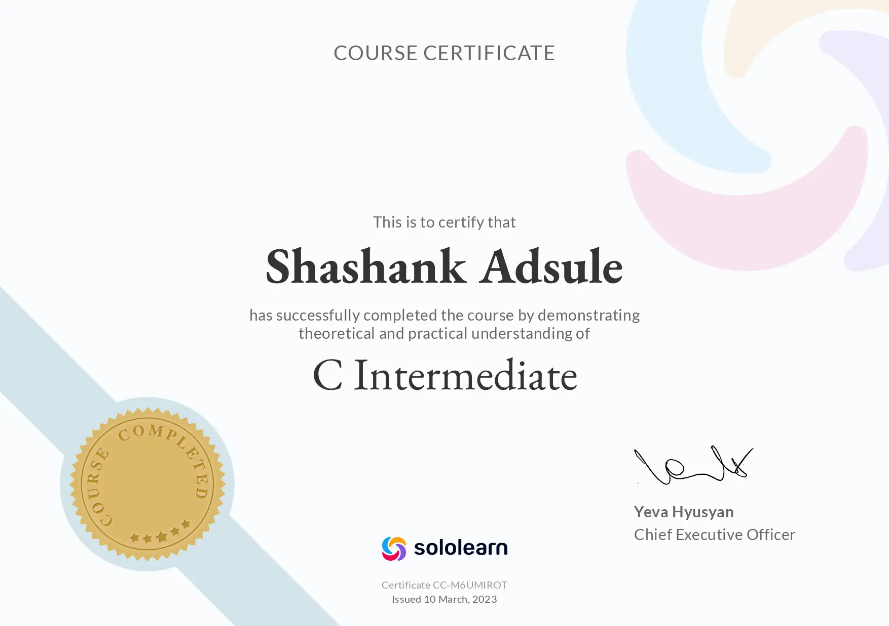
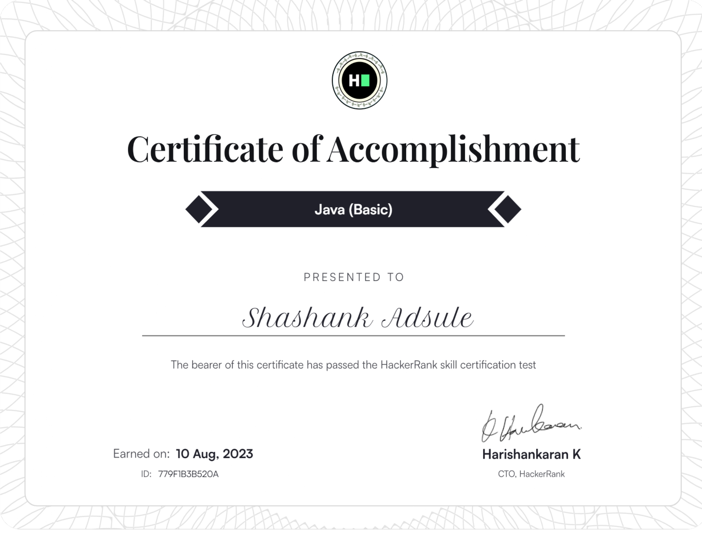
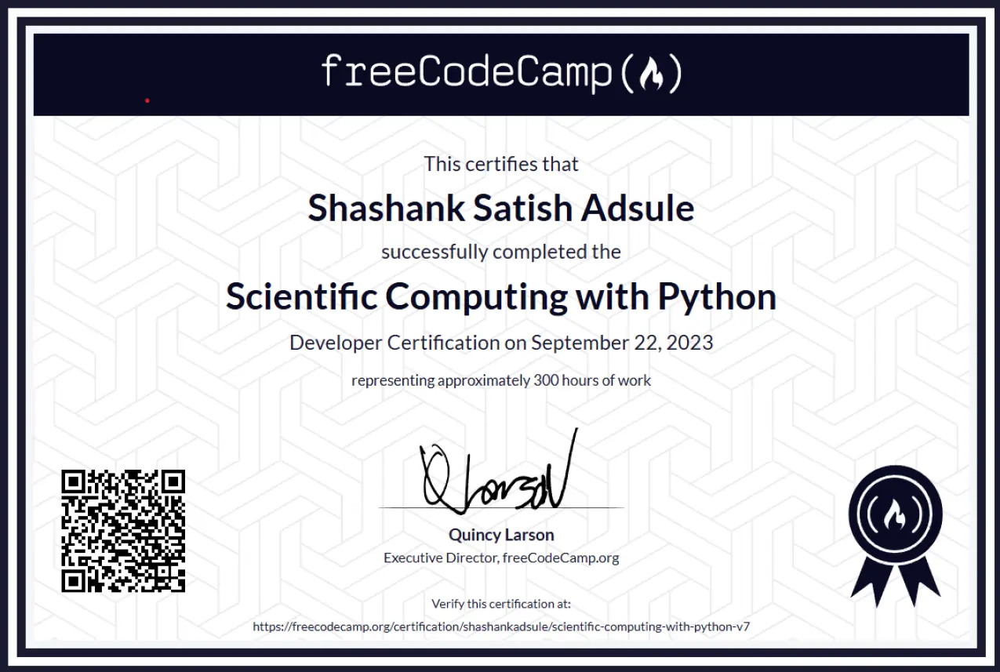
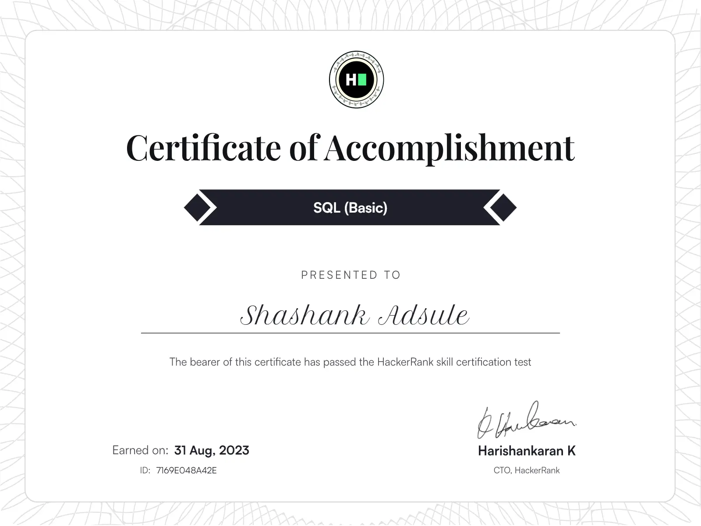
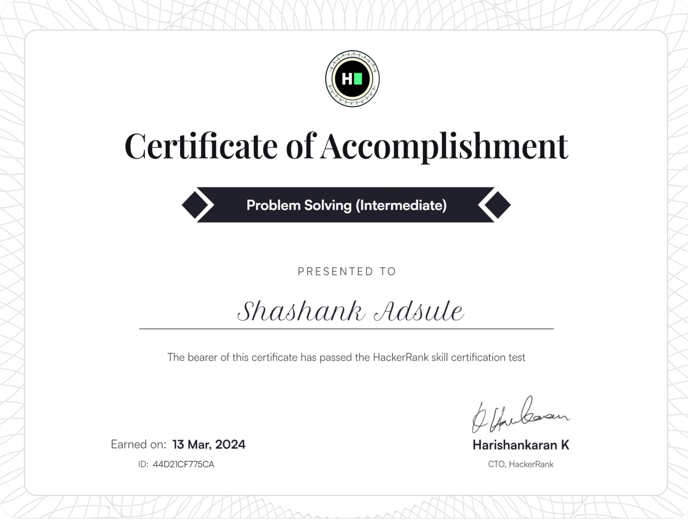
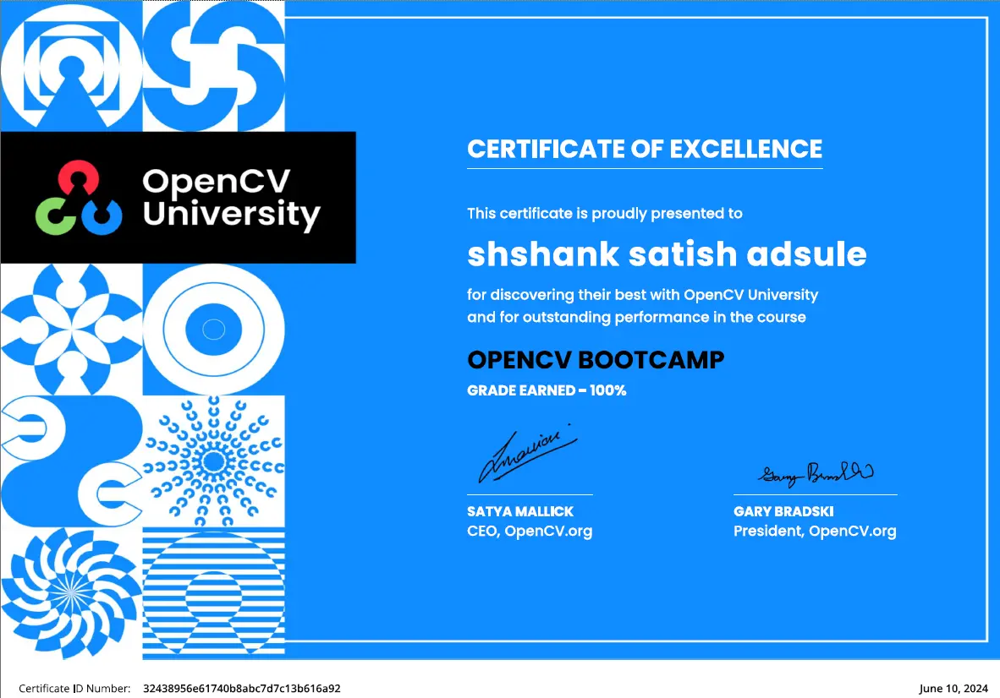

Highlights
 ⌄
⌄
Blends the content of one image with the artistic style of another using a pretrained VGG19 network to compute content and style loss across feature maps.
Technologies
PythonPyTorchOpenCVVGG19L-BFGS optimizer
 ⌄
⌄
Executable CLI app (Windows & Linux) that encodes and decodes Morse code from plain text, and synthesizes .wav audio output for each Morse sequence.
Technologies
C++Morse codeFile handling.wav format
 ⌄
⌄
ANPR pipeline using YOLOv8 for real-time license plate detection and EasyOCR for character extraction from cropped plate regions. Results exported to .csv.
Technologies
PythonYOLO v8OpenCVEasyOCRSORTRoboflow
 ⌄
⌄
Converts photos to pencil-sketch-style images using K-Means clustering for colour quantization, retaining key structural features via image processing techniques.
Technologies
PythonK-MeansOpenCVStreamlit
Certifications

C Intermediate
Sololearn
C++ Intermediate
Sololearn

Java
HackerRank

Scientific Computing with Python
freeCodeCamp

SQL
HackerRank

Problem Solving
HackerRank

OpenCV Bootcamp
OpenCV University
Olympiad & Academic Honours
National Science Olympiad — 1st rank in class
Qualified in Dec 2016 & Dec 2018 · 1st rank in class in 2018
International Mathematics Olympiad
Qualified — Jan 2017
International Science Olympiad — 3rd rank in class
Qualified in 2015 · 3rd rank in class